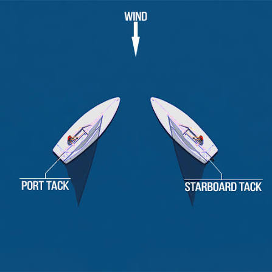

Module 4
Tacking
Learn how to safely change direction by turning the bow through the wind while maintaining speed and control.
Learning Objectives
After completing this lesson, you should be able to:
- Explain what a tack is.
- Understand why sailboats tack when sailing upwind.
- Perform the correct sequence of actions during a tack.
- Avoid common beginner mistakes.
- Maintain boat speed and balance throughout the maneuver.
What is a Tack?
A tack is a maneuver that turns the bow of the boat through the wind, changing from one close-hauled course to the opposite close-hauled course. It is the primary method of sailing toward a destination that lies directly upwind.
Since a sailboat cannot sail directly into the wind, sailors make progress by sailing a zigzag pattern called beating. Each change of direction is a tack.
Why Do We Tack?
Sailboats generate lift when sailing at an angle to the wind, but they lose that lift if pointed directly into it. Tacking allows the boat to continue making forward progress while gradually reaching an upwind destination.
Efficient tacking minimizes speed loss and helps maintain momentum, making sailing faster and more enjoyable.
Steps to Perform a Tack
① Prepare
Look around for other boats, choose a safe moment, and ensure you have enough speed before beginning the maneuver.
② Turn the Boat
Push the tiller toward the sail. The bow will begin turning toward the wind.
③ Cross the Boat
As the boom swings across, duck underneath it, switch the tiller extension and mainsheet to your new hands, and move smoothly to the new windward side.
④ Trim and Steer
Settle the boat flat, steer onto the new close-hauled course, and trim the mainsheet for maximum speed.

Common Beginner Mistakes
- Beginning the tack with insufficient speed.
- Turning the tiller too aggressively.
- Crossing the cockpit too slowly.
- Looking down instead of watching where the boat is going.
- Forgetting to flatten the boat after the tack.
- Over-steering after completing the maneuver.
Safety Tips
Always watch for other boats before tacking and keep a firm grip on both the tiller extension and mainsheet. Be aware of the boom as it swings across the boat, and move confidently without rushing.
Key Takeaways
- A tack turns the bow through the wind.
- Tacking allows a sailboat to make progress upwind.
- Begin every tack with good boat speed.
- Cross the boat smoothly while keeping control of the tiller extension and mainsheet.
- Finish every tack with the boat flat and properly trimmed.